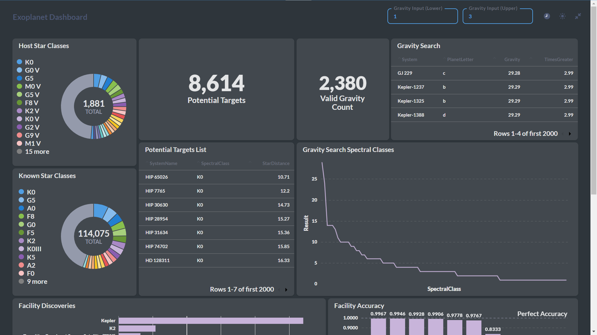
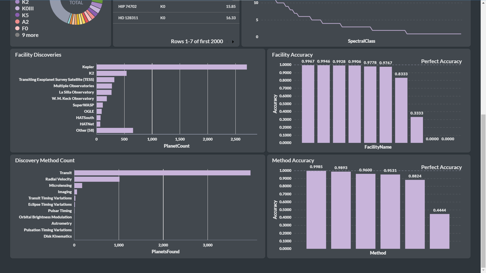
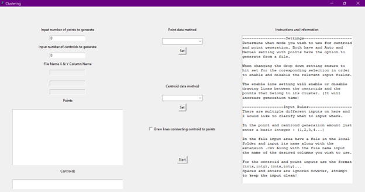
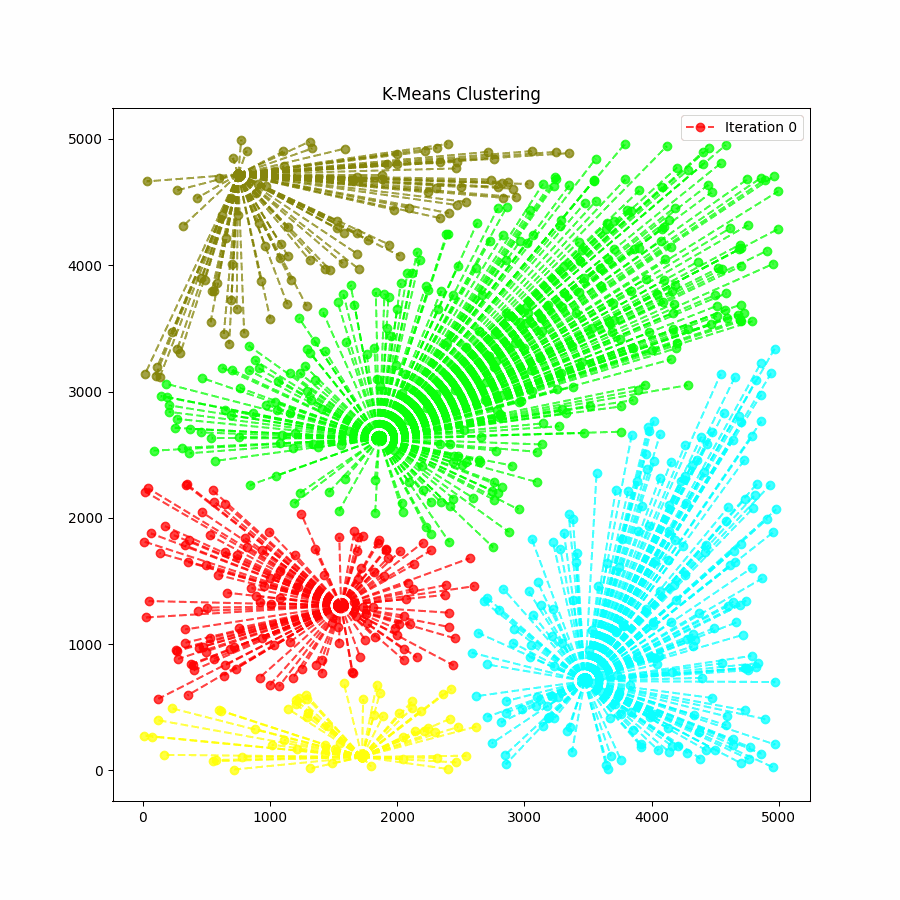

about
I am a recent graduate with a Bachelor's in Computer Science from Marshall University. I have experience in creating client ready data management systems, data analysis, and web development all while working in team environments due to course work. I personally am in pursuit of improving my skills in the field of simulations and efficient programming along with further improving my skills with data gathering/transformation and service hosting and management.
skills
languages & scripting
Python
C/C++
SQL
PHP
HTML/SCC
Java
JavaScript
frameworks & technology
MySQL Workbench
Visual Studio & VS Code
Github
Metabase
Docker
Flask
Jupyter Notebooks
work & achievements
Twitter Datamining and Analysis ProjectDatamining project done for a course in which myself and two others went thorught the process of scraping, cleaning, transforming, and visualizing data from Twitter/X. We made use of scrapers and APIs to accomplish our goals and found meaningful results. Check to the left for a PDF preview of my groups work along with an option to download. |
Marshall SCORES Devlopment (Frontend)Worked with a team at Marshall developing the school's new website for their SCORES program. I worked frontend along with two others to help create a landing page and database access screen for valid users. This project required proper adherence to Marshall styling guidelines along with accessability requirements complience all while working in a Agile team environment. |
Exoplanet Data Warehouse DashboardA Metabase powered dashboard running within a Docker container connecting to a data warehouse hosted using MySQL. Project consisted of finding, retrieving, transforming and loading data from mutliple online databases including the ESA Gaia Archive and the NASA Exoplanet Archive. Once data was properly stored a series of queries was created to display the information.

 |
K-Means Centroid Visualization AssignmentThis smaller project was a class assignment that kind of got out of hand. The goal was to create visualizations of centroids output to a file so I decided to take advantage of the prompt and use it as practice for event handling in python and GUI creation using Tkinter in Python. The program allows the input of files or manual strings with an alternative option to generate data randomly. The program then generates a txt and gif file output showing generational changes between points and their assigned clusters.

 |